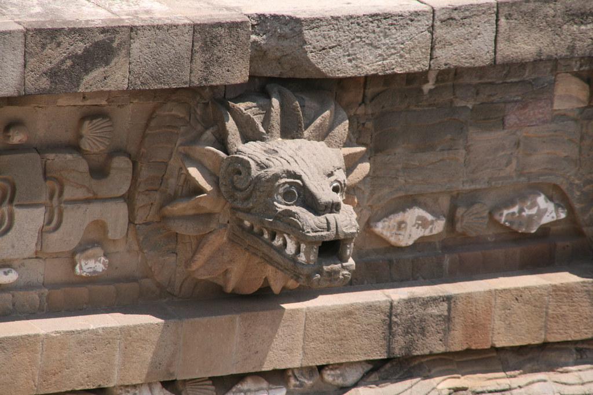
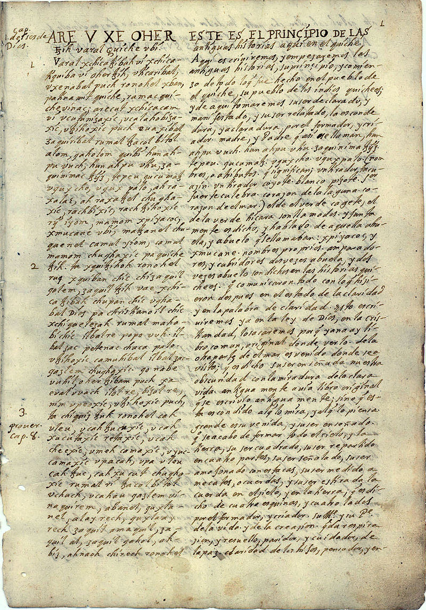

The Popol Vuh
Also known as the Popul Vuh or Pop Vuj, this is a piece of text that recounts the mythology and history of the Guataemalan K'iche' people. As their sacred narrative, it existed long before the Spanish conquest of the Maya, and features the creation myth along with the exploits of the "Hero Twins" (Hunahpu and Xbalanque). Its name translates roughly to "Book of Community" or "Book of Counsel," with a literal meaning of "Book that pertains to the mat." The latter name is in reference how woven mats were used as royal throne in K'iche' society---while also symbolizing the unity of their community. Like many ancient religions, theirs was almost exclusvely made up of oral tradition until around 1550 when it was put into writing. Around 200 years later, the Spanish Dominican friar, Francisco Ximenez, created a manuscript and transcription in its original language, with translations into Spanish. Below is an image of a portion of that verison of the text.

Who is Qʼuqʼumatz?
Qʼuqʼumatz is the postclassic K’iche’ Mayan god of wind and rain. According to the Popol Vuh, he created the world and humanity with the god Tepeu, the god of lightning and fire. He was one of thirteen deities who shaped the world and created humanity. It’s from him that humans learned the rules of law, agriculture, literacy, the arts, medicine, architecture, construction, hunting, fishing, and the like. In the Popol Vuh, Qʼuqʼumatz is depicted as floating in the primordial sea with Tepeu. The two then discuss creating the earth and mankind. They willed the former into being, simply by naming what it was they wanted. They then created animals, though soon condemned them to the wild to be eaten by their later creations because they couldn’t audibly worship them. Their initial attempt to make a person was from mud, and then from wood. Neither of which could move, speak, or praise the gods as they had wanted them to, so they were destroyed. The two soon found success when attempting to construct man out of maize. When his job was finally done, Qʼuqʼumatz returned to the primordial sea with the promise of coming back, sometime, in the future.
Q’uq’umatz was worshiped as early as the first century BCE at the city of Teotihuacan---which is located in Central Mexico, just northeast of modern-day Mexico City. He also has some overlap with other gods, such as the Aztec's Quetzalcoatl and the Yucatec Mayan's Kukulkan. This is primarily due to the fact that they’re all Feathered Serpents, which are supernatural entities commonly found throughout numerous religions in Mesoamerica. Additionally, it’s believed that all K’iche’ nobility descended from him. As such, the king who founded the city of Q’umarkaj, Kotuja’ (also likely a former priest), took on his name as a title.